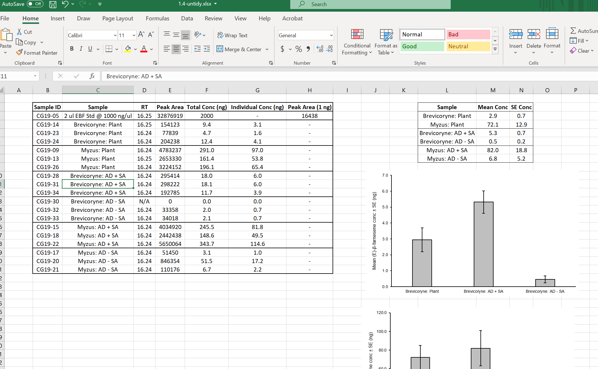
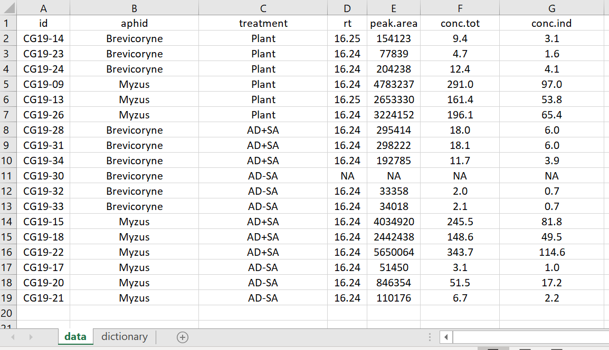
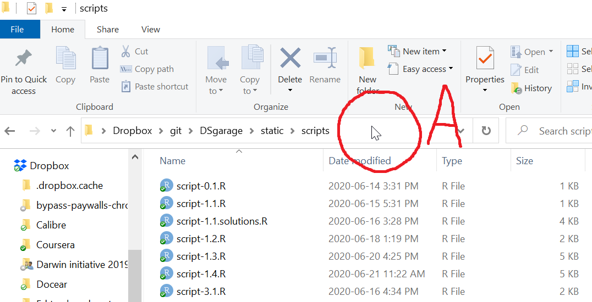
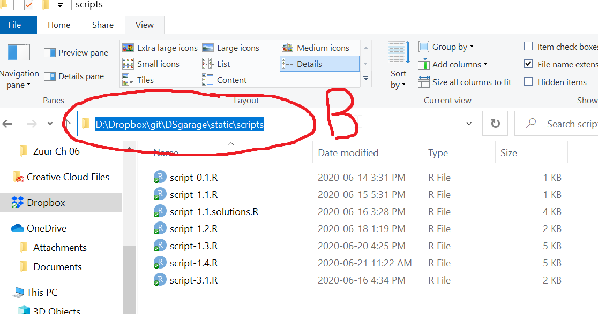
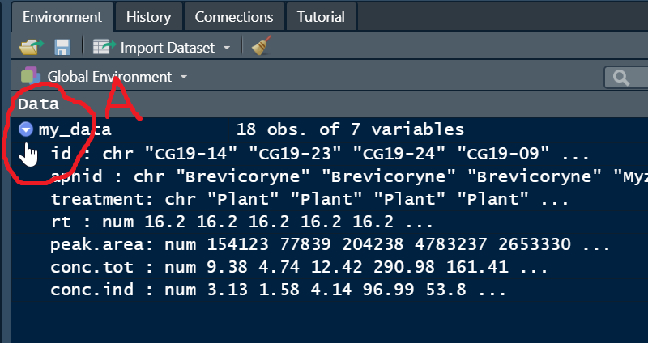

05 Data frames

1 Data frames in R
NB for this page we assume you have access to Microsoft Excel. However, similar spreadsheet software (like Libre Office Calc) will work fine.
The first step in using R for data analysis is getting your data into
R. The first step for getting your data intoRis making your data tidy.
The commonest question we have experienced for new users of R who want to perform analysis on their data is how to get data into R. There is good news and bad news. The good news is that it is exceedingly easy to get data into R for analysis, in almost any format. The bad news is that a step most new users find challenging is taking responsibility for their own data.
What we mean here is that best practice in data management involves active engagement with your dataset. This includes choosing appropriate variable names, error checking, and documenting information about variables and data collection. We also aim to avoid proliferation of excessive dataset versions, and, worst of all, embedding graphs and data summaries into Excel spreadsheets with data.
1.1 Objectives
Common data file types
Excel, data setup, and the Data Dictionary
Getting data into R
Manipulating variables in the Data Frame
Practice exercises
2 Tidy data concept
2.1 The Tidy Data concept
A concept to streamline data preparation for analysis is Tidy Data. The basic idea is to format data for analysis in a way that
Archives data for reproducibility of results, and
Makes the data transparent to colleagues or researchers by documenting a data dictionary.
This page is all about the tidy data concept and a simple recipe for best practice to prepare data for analysis and to get data into R.
The definition of Tidy Data is generally attributed to Wickham (2014), and is based on the idea that with a few simple rules, data can be archived for complete reproducibility of results. This practice benefits any user because it facilitates collaboration at the same time as documenting both data and analysis methods for value to future use.
The essentials of Tidy Data are:
Each variable should be in a column
Each independent observation should be in a row
A Data Dictionary should be associatied with the dataset, such that completely reproducible analysis is possible
3 Common data file types
The best file type for the majority of people to archive data for analysis is in a plain text Comma Separated Values (CSV or .csv) file, or just an Excel Spreadsheet. Best practice in contemporary scientific data analysis dictates that proprietary data formats should be avoided, like those produced by SPSS, Genstat, Minitab or other programs.
The reason for this is that data stored in those formats is not necessarily useful to people who do not have access to the software, and that for archiving purposes, such software file formats tend to change over time. While Excel is a proprietary format, we find that it is is easy to use, (almost completely) ubiquitous, and relatively resilient to backwards compatibility issues. Thus, sticking to CSV or Excel is a rule you should have a very good reason if you choose to break from it.
We recommend using Excel to store data with the goal (for simple datasets and analyses) of having one table for the actual data, in Tidy Data format, and a second tab consisting of a Data Dictionary where each variable is described in enough detail to completely reproduce any analysis. Generally, no formatting or results should ever be embedded in an Excel spreadsheet that is used to store data.
4 Excel, data setup, and the Data Dictionary
4.1 Tidy Data and Excel
For this section, you should download the following files in Excel (.xlsx) format:
The aphid experiment
You are contacted by someone who wants help with data analysis and they give you some information about their experiment. They are interested in how diet affects the production of an important metabolite in pest aphids. They designed an experiment with a control treatment where aphids were allowed to feed on plain plants, another treatment where their diet was supplemented with one additive, “AD”, and a third treatment where their diet was supplemented with two additives, “AD” and “SA”. Another factor was aphid Genus, where individuals from the genera Brevicoryne and Myzus were tested. Three replicates of each treatment combination were performed:
aphid genus [2 levels] \(\times\) food treatment [3 levels].
The metabolite of interest was measured with a spectrometer using three individual aphids from each replicate. The spectrometer peak area (an arbitrary scale) represents the total amount of the metabolite, which was converted to a real scale of metabolite total concentration. Finally, this total concentration was divided by 3 to estimate the concentration of the metabolite in each individual aphid.
4.2 Untidy data
Have a look at the file 5-untidy.xlsx in Excel.
The aphid dataset is fairly small and it is readable by humans, but in its current form it is not usable for analysis in R or other statistical software and there are a few ambiguous aspects which we will explore and try to improve.
Untidy

The file contains embedded figures and summary tables
There is empty white space in the file (Row 1 and Column A)
The variable names violate several naming conventions (spaces, special characters)
Missing data is coded incorrectly (Row 13 was a failed data reading, but records zeros for the actual measurements)
Conversion information accessory to the data is present (Row 3)
There is no Data Dictionary (i.e. explanation of the variables)
The Aphid and Diet treatments are “confounded” in their coding
What the heck is the “RT” column (most of the values are identical)
Now, have a look at the Tidy Data version of the data file.

The embedded figures have been removed
The white space rows and columns have been removed
The variable names have been edited but still are equally informative
Missing data is coded correctly with “NA”
The conversion info has been removed and placed in the Data Dictionary
A complete Data Dictionary on a new tab (“dictionary”) was added, explaining each variable
The aphid and food treatment variables were made separate
Tidy Data version Data Dictionary tab

Notice in the Data Dictionary how there is a row for each variable with the name of the variable and an explanation for each variable.
4.3 CSV files
Once your data is tidy, it is very easy to read in Excel data files, or they can be exported into a text file format like CSV (comma separated values) to read straight into R or other programs.
Have a look at the Tidy Data dataset in .csv file format.
Open it with a plain text editor (e.g. Notepad in Windows, or similar). You will notice that each column entry is separated from others with a comma ,, hence the name Comma Separated Values!
Tidy csv

5 Getting data into R
We still need to actually “read data into R” from external files. There are a very large number of ways to do this and most people eventually find their own workflow. We think it is best for most people to use Excel or CSV files in Tidy Data format.
The basics of reading external files from a script is to to use the read.xlsx() function in the {openxlsx} package (you will probably need to install this with the install.packages() function), or else to use read.csv() that comes standard in base R. We will briefly try both.
5.1 Working directory
Best practice when working with files is to formally set your “working directory”. Basically, this tells R where your input (i.e. data) and output (like scripts or figures) files should be.
There are several viable ways to set your working directory in R, e.g. via the Session menu:

However, the best way to do this this is to set your working directory using code with the setwd() function. Here we should a workflow for Windows, which is similar on other computer systems. We consider the step of setting a working directory essential for best practice.
If you are unfamiliar with how to obtain the path to your working directory, open windows explorer, navigate to the folder you wish to save your script, data files and other inputs and outputs. You can think of this folder as one that contains all related files for e.g. a data analysis project, or perhaps this bootcamp module!

Notice the folder “view” is set to “Details”, and also notice that the folder options are set to “Show file extensions”. We recommend setting your own settings like this (if using Windows Explorer).
The pointer is indicated in the circle marked A in the picture above.
Left click the area to the right of the folder text once (where the pointer is in the picture above) and you should see something similar to the figure below, where the folder path is displayed and the text is automatically selected.

Assuming you have opened the File Explorer in your working directory or navigated there, the selected PATH is the working directory path which you can copy (Ctrl + c in Windows). In your script, you can now use getwd() to get and print your working directory path, and setwd(), which takes a single character string of the path for your working directory for the argument dir , to set it.
R file paths use the forward slash symbol “/” to separate file names. A very important step for Windows users when setting the working directory in R is to change the Windows default “” for forward slashes…
5.2 Read in your first file
You need this for the following code if you did not already download it above: .xlsx data file
# Try this
getwd() # Prints working directory in Console
setwd("D:/Dropbox/git-rstats-bootcamp/website/data")
# NB the quotes
# NB the use of "/"
# NB this is MY directory - change the PATH to YOUR directory :)
getwd() # Check that change worked
## Read in Excel data file
install.packages(openxlsx, dep = T) # Run if needed
library(openxlsx) # Load package needed to read Excel files
# Make sure the data file "5-tidy.xlsx" is in your working directory
my_data <- read.xlsx("5-tidy.xlsx")All being well, you should see the following data object in your Global Environement. Note the small blue button (A, circled below) you can press to espand the view of the variables in your data frame.

Note that the same procedure works with Comma Separated Values data files, and other kinds of files that you want to read into R, except that the R function used will be specific to the file type. E.g., read.csv() for CSV files, read.delim for TAB delimited files, or read.table() as a generic function to tailor to many types of plain text data files (there are many others, but this is enough for now).
6 Manipulating variables in the Data Frame
Now that there is a data frame in your working environment, we can start working with the variables. This is a good time to think about the “
RSpace” metaphor. You are floating inRSpace and you can see a data frame calledmy_data. You cannot see inside the container, so we will look at methods of accessing the data inside by name…
6.1 Data manipulation in R
The
names()functionThe use of the
$operator for data framesThe use of the
str()function for data framesThe use of the index operator
[ , ]The use of the
attach()function
Carefully use the follow code and try some data manipulation on your own.
6.2 class()
# Try this
class(my_data) # data.frame, a generic class for holding data6.3 names()
The names() function returns the name of attributes in R objects. When used on a data frame it returns the names of the variables.
# Try this
names(my_data)6.4 $ operator for data frames
The $ operator allows us to access variable names inside R objects. Use it like this:
data_object$variable_name
# Try this
conc.ind # Error because the variable conc.ind is INSIDE my_data
my_data$conc.ind6.5 str()
The str() function returns the STRUCTURE of a data frame. This includes variable names, classes, and the first few values
# Try this
str(my_data) The output similar to the graphical Global Environment view in RStudio. Note the conc.ind variable is classed numeric
Note the treatment variable is classed as character (not a factor)
6.6 [ , ] the index operator
The index operator allows us to access specified rows and columns in data frames (this works exactly the same in matrices and other indexed objects).
# Try this
my_data$conc.tot # The conc.tot variable with $
my_data$conc.tot[1:6] # each variable is a vector - 1st to 6th values
help(dim)
dim(my_data) # my_data has 18 rows, 6 columns
my_data[ , ] # Leaving blanks means return all rows and columns
names(my_data) # Note conc.tot is the 6th variable
names(my_data)[6] # Returns the name of the 6th variable
my_data[ , 6] # Returns all rows of the 6th variable in my_data
# We can explicitly specify all rows (there are 18 remember)
my_data[1:18 , 6] # ALSO returns all rows of the 6th variable in my_data
# We can specify the variable names with a character
my_data[ , "conc.tot"]
my_data[ , "conc.ind"]
# Specify more than 1 by name with c() in the column slot of [ , ]
my_data[ , c("conc.tot", "conc.ind")] 6.7 attach()
The attach() function makes variable names available for a data frame in R space
# Try this
conc.ind # Error; the Passive-Aggressive Butler doesn't understand...
attach(my_data)
conc.ind # Now that my_data is "attached", the Butler can find variables inside
help(detach) # Undo attach()
detach(my_data)
conc.ind # Is Sir feeling well, Sir?7 Practice exercises
The data are from a small experiment measuring antenna length in butterflies manipulating diet in both sexes.
7.1
Download the data file above and place it in a working directory. Set your working directory. Read in the data file and place it in a data frame object named data1. After examining the data, use mean() to calculate the mean of the variable length and report the results in a comment to two decimal points accuracy. Show your R code.
7.2
Show the code to convert the diet variable to an ordinal factor with the order “control” > “enhanced”, and the sex variable to a plain categorical factor.
7.3
Show code for two different variations of using only the [ , ] operator with your data frame to show the following output:
diet length
8 control 6
9 control 7
10 control 6
11 enhanced 8
12 enhanced 7
13 enhanced 97.4
Show code to read in a comma separated values data file that does not have a header (first row containing variable names).
7.5
Describe in your own words what the attach() function does.
7.6
Write a plausible practice question involving any aspect of manipulation of a data frame.